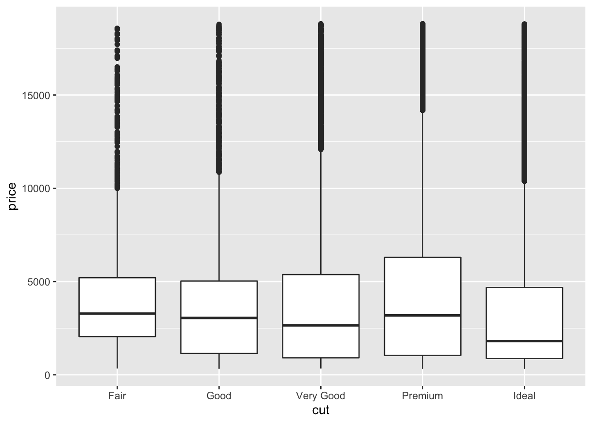
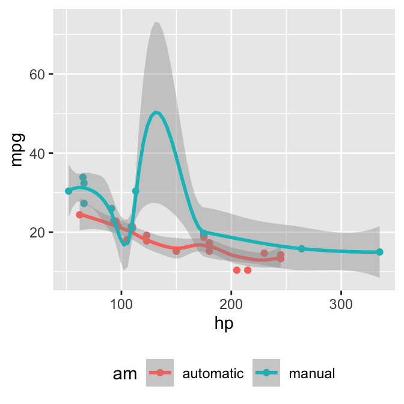
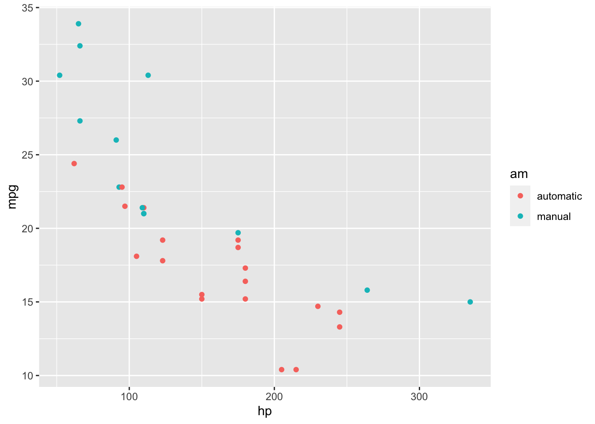
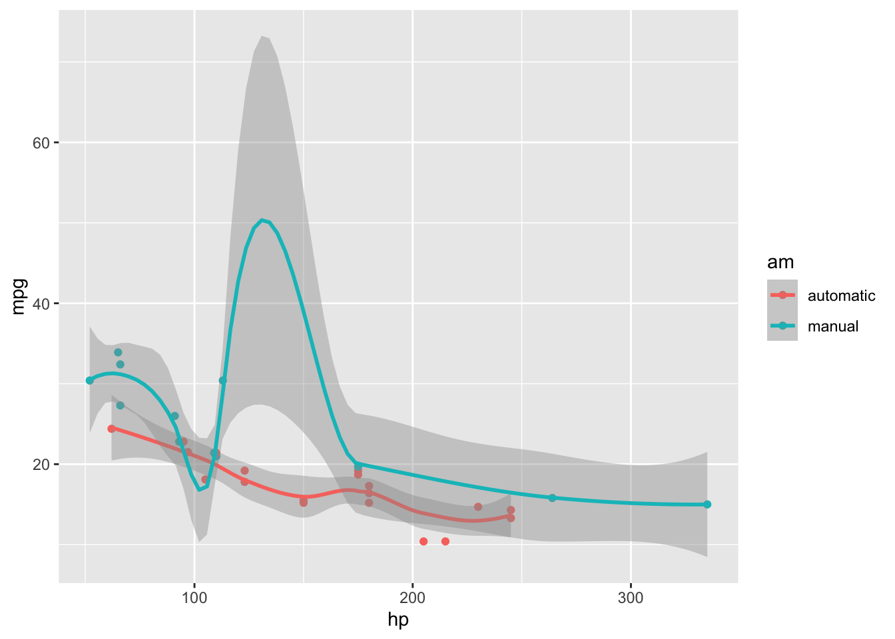
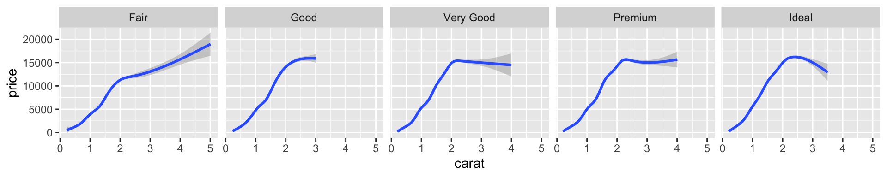

Типографика Тафти для заметок
Шрифты, кегли, поля, сноски, рисунки, инфографика, формулы и код
Образец для заметок дневника
2026-11-22
Эта страница — эталон: каждый элемент показан так, как он должен выглядеть
в заметках. Основной текст — ET Book 21px/30px в колонке 55% ширины;
сноски и малые рисунки — в правом поле; графики — без chartjunk,
с прямыми подписями. Сравните с исходником: разметка минимальна,
вся типографика — в tufte-universal.css.
Above all, show the data.
Принципы
Стиль Тафти — это не «красивый шрифт», а дисциплина показа данных. Каждое чернило на странице должно нести данные (data-ink ratio); всё остальное — chartjunk: тени, 3D, рамки-«шкатулки», круговые диаграммы, легенды вместо прямых подписей. 1 Edward Tufte, The Visual Display of Quantitative Information (1983), гл. 1–2: data-ink ratio, chartjunk, lie factor. Коэффициент лжи (lie factor) — отношение визуального эффекта к эффекту в данных — должен быть близок к единице: график не должен «врать» сильнее, чем цифры. Заметка на полях (без номера) — для пояснений, не привязанных к конкретному месту текста. На узком экране нажмите ⊕.
Вместо сносок внизу страницы Тафти использует боковые сноски: пояснение стоит рядом с тем местом, к которому относится, и не разрывает чтение. Именно поэтому основная колонка узкая (55%), а правое поле широкое.
Шрифты и кегли
Основной шрифт — ET Book (открытый аналог Bembo),
курсив и полужирный — отдельные начертания. Запасной стек —
Palatino, Book Antiqua, Georgia. База страницы — 15px;
текст — 1.4rem (21px) с интерлиньяжем 2rem (30px).
2
Файлы шрифтов лежат в tufte/et-book/ (woff + ttf).
Если они недоступны, браузер откатывается на Palatino/Georgia.
Цифры в тексте — старинные (old-style): 1234567890, они не «прыгают» по высоте строки. В таблицах и коде — строчные (lining, табличные): 1234567890. Номера сносок — старинными цифрами ET Book, над строкой.
Акценты — без жирного: курсив, капитель,
санс-сериф для подписей и моноширинный для кода.
Жирный (strong) — только в табличных шапках и редких случаях.
| Элемент | Шрифт | Кегль | Интерлиньяж | Начертание |
|---|---|---|---|---|
| Заголовок документа (h1.title) | ET Book | 3.2rem · 48px | 1.0 | прямой |
| Раздел (h1) | ET Book | 2.2rem · 33px | 1.0 | курсив |
| Подраздел (h2) | ET Book | 1.7rem · 25.5px | 1.0 | курсив |
| Подзаголовок (subtitle) | ET Book | 1.8rem · 27px | 1.0 | курсив |
| Текст (p) | ET Book | 1.4rem · 21px | 2rem · 30px | прямой |
| Сноски, подписи (sidenote, caption) | ET Book | 1.1rem · 16.5px | 1.3 / 1.6 | прямой |
| Код инлайн / блок | моноширинный | 1.0 / 0.9rem | 1.42 | — |
| Подписи графиков | Gill Sans | 1.1rem | 1.4 | прямой |
Мера: основная колонка 55%, поле сносок — остаток (body 87.5% + отступ 12.5%, максимум 1400px). Абзацы без отступа первой строки, поля 1.4rem; первая фраза раздела — капителью (как здесь).
Заголовки и отступы
Правило Тафти: не больше двух уровней заголовков (главы + A-heads).
Если хочется h4 — перестройте документ. Ниже — все уровни эталона.
Подраздел второго уровня (h2, 1.7rem, курсив)
Текст под подразделом. Обратите внимание: заголовок не центрируется, не выделяется жирным и не получает номера — структура читается за счёт кегля, курсива и вертикального ритма.
Третий уровень (h3, 1.4rem, курсив) — только если без него никак
Подзаголовок документа (p.subtitle, 1.8rem) крупнее подраздела —
это нормально: он относится к заголовку, а не к разделу.
Автор и дата (h4.author/date, 1.4rem, прямой) — в начале страницы.
Горизонтальная линейка (hr) — 55% ширины, 1px, цвет #ccc.
Она отделяет крупные блоки, но не заменяет заголовки.
Боковые сноски и заметки на полях
Нумерованная боковая сноска стоит в правом поле, рядом с местом ссылки.
3
Это сноска 3. Номер — старинной цифрой, над строкой.
На экране уже 760px нажмите на номер, чтобы раскрыть текст.
Вторая сноска в том же абзаце показывает, что нумерация сквозная.
4
Сноска 4. В сноске могут быть ссылки,
код и формулы \(E = mc^2\).
Заметка на полях без номера — для отступлений и пояснений.
Заметка на полях (⊕). Короткий пример кода:
const x = 42;
Сноски не должны быть длиннее абзаца: если пояснение большое —
выносите его в основной текст или в полноширинный блок.
«Данные не являются информацией, информация не является знанием…» 5 Цитата Клиффорда Столла. Сноска внутри цитаты сдвигается дальше в поле (margin-right −82%).
Рисунки
Рисунок в основном столбце (55%) — стандарт для иллюстраций.
Подпись — на полях справа, 1.1rem. Разметка — figure/figcaption
или div.figure/p.caption (Pandoc).

Малый рисунок на полях — рядом с текстом, не разрывая абзац.
figure.margin-figure.
Внутритекстовый рисунок (figure.inline-figure) — обтекание
в потоке. Тафти предпочитает рисунки на полях, поэтому inline —
исключение, а не правило.

Этот абзац обтекает внутритекстовый рисунок слева. Обратите внимание: подпись под рисунком, а не на полях, — иначе она потеряется в потоке. Длинные подписи для inline не подходят; для них — основной столбец или полноширинный рисунок.
Два рисунка подряд — каждый со своей подписью на полях.
Первый рисунок: подпись на полях (Pandoc-стиль).

Второй рисунок: подпись на полях.
Полноширинный рисунок (90%) — для важных иллюстраций, которым тесно в колонке 55%. Подпись — с отступом справа 24%.

Инфографика
График по Тафти начинается с данных, а не с украшений. Ниже — строительные блоки эталона: спарклайн, малые кратные, столбцы, точки, наклонный график и таблица-графика. Все — чистый CSS + инлайн-SVG, без библиотек. Подписи — прямые, на графике; сетка — только светлая. 6 Заголовок графика — короткая фраза («Рост за 12 месяцев»), а не «Рисунок 1». Источник данных — мелкой подписью под графиком.
Спарклайн в строке текста
Мини-график высотой в строку, без осей и сетки.
Продажи за неделю: — 12, 9, 11, 6, 8, 4, 5 (условные единицы). Спарклайн не заменяет полный график: он показывает форму, а не точные значения.
Источник: условные данные эталона.
Столбцы с прямыми подписями
Без осей-«гребёнок»: значение подписано у конца столбца.
Источник: условные данные эталона. Акцент — только для максимума.
Точечный график (dot plot)
Каждая точка — одно наблюдение; шкала — одна на все строки.
Источник: условные данные эталона.
Наклонный график (slope graph)
Два состояния, прямые подписи у концов линий. Без легенды.
Источник: условные данные эталона.
Север
Юг
Восток
Запад
Малые кратные: четыре мини-графика с общей шкалой. Сравнение идёт по форме линий, а не по разным осям — это и есть small multiples.
| Регион | Значение | Доля | Динамика |
|---|---|---|---|
| Север | 88 | ||
| Юг | 70 | ||
| Восток | 62 |
Полноширинный график — для сложных данных. Тот же набор классов, только контейнер шире; подписи остаются прямыми.
Полноширинный график
Линейный график с областью: сетка — только светлая, подписи — у данных.
Источник: условные данные эталона.
Математические формулы
Инлайн-формула в потоке текста: \(E = mc^2\) и \(\frac{d}{dx}\left(\int_{a}^{x} f(u)\,du\right) = f(x)\). Кегль наследует текст; формула не разрывает строку сильнее, чем слово.
Блочная формула — по центру текстового столбца (55%):
\[\int_{-\infty}^{\infty} e^{-x^2}\,dx = \sqrt{\pi}\]
Ряд Тейлора для функции \(f(x)\) в точке \(a\):
\[f(x) = \sum_{n=0}^{\infty} \frac{f^{(n)}(a)}{n!}(x-a)^n\]
Формула в сноске — 0.9em на всю ширину колонки: 7 \[\frac{d}{dx}\left(\int_{a}^{x} f(u)\,du\right)=f(x).\] Нумерованное уравнение: формула по центру, номер — в поле справа.
\[f(x) = \sum_{n=0}^{\infty} \frac{f^{(n)}(a)}{n!}(x-a)^n\]
Полноширинная формула: на всю ширину блока.
Код
Инлайн-код — моноширинным 1.0rem, без фона:
const example = "Hello, World!";.
Блоки — 0.9rem, с тонкими линейками сверху/снизу (как таблицы),
без плашки. Подсветка — только цветом токенов.
Python
def greet(name):
"""Приветствие пользователя"""
print(f"Привет, {name}!")
numbers = [1, 2, 3, 4, 5]
squares = [x**2 for x in numbers]
return squares
greet("Мир")JavaScript
function greet(name) {
console.log(`Привет, ${name}!`);
}
greet("Мир");C
#include <stdio.h>
int main(void) {
printf("Привет, Мир!\n");
return 0;
}SQL
SELECT u.name, COUNT(o.id) AS order_count
FROM users u
LEFT JOIN orders o ON u.id = o.user_id
GROUP BY u.id, u.name;
Короткий пример в сноске:
8
const x = 42;
Краткий пример кода в боковой заметке.
Для длинных листингов, где нужна плашка, — pre.pre-boxed
(светлый фон и левая линейка). По умолчанию плашки нет.
# pre-boxed: светлый фон для длинных листингов
print("Плашка — исключение, а не правило.")Таблицы
Таблицы в стиле booktabs: верхняя и нижняя линии 2px, под шапкой 1px, вертикальных линий нет. Числа — строчные, выровнены вправо. Подпись таблицы — над ней, 1.1rem.
| Параметр | Вариант A | Вариант B | Вариант C | Единицы |
|---|---|---|---|---|
| Скорость | 120 | 150 | 180 | км/ч |
| Мощность | 75 | 100 | 125 | л.с. |
| Расход | 6.5 | 7.2 | 8.1 | л/100км |
| Цена | 500 000 | 750 000 | 1 000 000 | ₽ |
Широкая таблица — в .table-wrapper (санс-сериф, горизонтальная
прокрутка при переполнении). Полноширинная таблица — table.fullwidth.
Цитаты и списки
«Великие люди говорят об идеях, средние — о вещах, а маленькие — о вине.»
Нумерованный список (50% + 5% отступ = 55%):
- Первый элемент нумерованного списка
- Второй элемент с дополнительной информацией
- Вложенный маркированный элемент
- Ещё один вложенный элемент
- Третий элемент первого уровня
Маркированный список:
- Элемент маркированного списка
- Ещё один элемент
- И ещё один элемент
Список определений (dl/dt/dd):
- Data-ink ratio
- Доля чернил, несущих данные, в общем объёме чернил графика.
- Chartjunk
- Декоративные элементы, не несущие данных: тени, 3D, рамки.
- Small multiples
- Серия мини-графиков с общей шкалой для сравнения по форме.
Ссылки и выделение
Ссылки — цветом текста, с подчёркиванием, не пересекающим выносные элементы: gypsy, Typography, yesterday. Синий цвет не используется: он кричащий и отвлекает от чтения. При наведении цвет не меняется.
Выделение: жирный (редко), курсив (часто),
санс-сериф, капитель,
моноширинный, красный для предупреждений.
Комбинации: жирный курсив.
Полноширинное примечание: блок на 90% ширины для важной информации, которая должна выделяться. Фон и левая линейка — только здесь, в основном тексте их нет.
После полноширинных блоков основной текст продолжается в обычной мере.
Адаптивность и печать
При ширине меньше 760px боковые сноски скрываются и раскрываются по клику на номер или ⊕; основная колонка расширяется до 90%. Проверьте, сузив окно: сноски 3–8 должны прятаться и раскрываться.
При печати сноски видны всегда, переключатели скрыты, фон — белый, текст — чёрный. Кнопка темы (☾/☀ справа вверху) переключает дневную и ночную темы; выбор запоминается в браузере.
Как использовать в новой заметке: подключите
tufte-universal.css, разметьте сноски по образцу выше,
графики — классами .tufte-chart, .small-multiples,
.bar-chart, формулы — \(…\) / \[…\],
код — pre > code.language-*. Полный список классов —
в шапке tufte-universal.css.